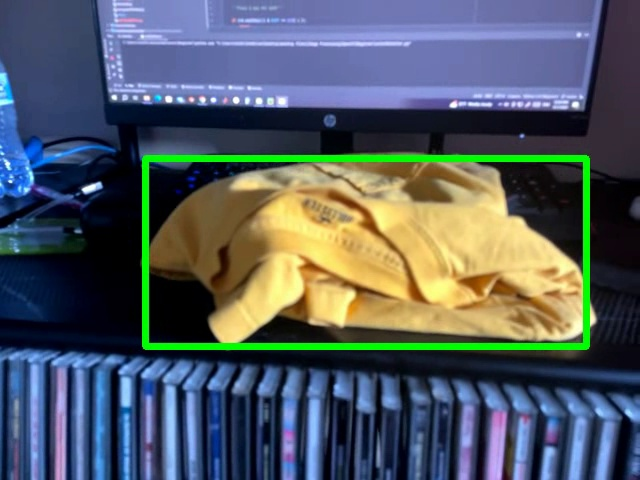
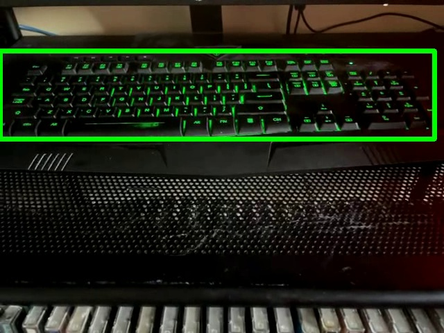
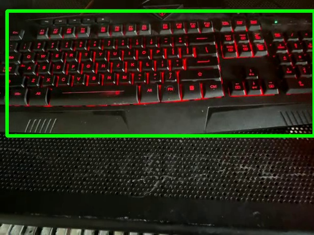

Color Detector
Summary
In this project, I created and implemented a live feed color detecting program. Live color detection is a useful basis for many simple Object Detection systems. By performing Image Processing on a webcam feed, I learned to use OpenCV and Pillow libraries in Python. The final product was able to detect 3 different chosen colors on webcam footage.
Background
Color detection is a simple easy staple within computer vision. It is often used for simple setups such as comparing positions of an object throughout a video. This technique uses detects a specified color and determines its location in real-time. To do this it uses colorspace conversion, thresholds, binary masks, and bounding box estimation.
Util.py
import numpy as np
import cv2
def get_limits(color):
c = np.uint8([[color]])
hsvC = cv2.cvtColor(c, cv2.COLOR_BGR2HSV)
lowerLimit = hsvC[0][0][0] - 10, 100, 100
upperLimit = hsvC[0][0][0] + 10, 255, 255
lowerLimit = np.array(lowerLimit, dtype=np.uint8)
upperLimit = np.array(upperLimit, dtype=np.uint8)
return lowerLimit, upperLimitThis file serves as the primary function to convert a BGR color matrix into an upper an lower limit for detecting isolating a specific color range in an image. To accomplish this the file uses the Numpy and OpenCV libraries to enable the color conversion code as well as the simplified Numpy arrays. The function takes the three channel matrix and converts it into the HSV Colorspace. Then creates a lower and upper bound relative to the HSV color matrix. Lastly, the upper and lower limits are formatted into unsigned 8-bit integers arrays before being returned as the output of the function.
Imports and color definitions
import cv2
from PIL import Image
from util import get_limits
yellow = [0, 255, 255] # yellow in BGR colorspace
green = [0, 255, 0] # green in BGR colorspace
red = [0, 0, 255] # red in BGR colorspace
Besides the util.py function file, the openCV and Pillow libraries are needed. Together these libraries process the images. For this detector 3 different colors were chosen: Yellow, Green, & Red.
Get Color Bounding Box
def load_lims(frame):
hsv_Image = cv2.cvtColor(frame, cv2.COLOR_BGR2HSV)
lowerLimit, upperLimit = get_limits(color=yellow)
mask = cv2.inRange(hsv_Image, lowerLimit, upperLimit)
mask_ = Image.fromarray(mask)
bbox = mask_.getbbox()
if bbox is not None:
x1, y1, x2, y2 = bbox
frame = cv2.rectangle(frame, (x1, y1), (x2, y2), (0, 255, 0), 5)
return frameThis function converts the Colorspace of the image into HSV then runs the function get_limits from the util.py file to get the upper and lower hue Thresholds. Thereafter, a Binary Mask is made from this data. with these mask made each frame, a Bounding Box estimate can be drawn on the original image and returned as the the function output.
Load and Unload Live Webcam Feed
cap = cv2.VideoCapture(1)
while True:
rate, frame = cap.read()
frame = load_lims(frame)
cv2.imshow('web_cam', frame)
'''Press Q key for exit'''
if cv2.waitKey(1) & 0xFF == ord('q'):
break
cap.release()
cv2.destroyAllWindows()This last section of code is for webcam integration. It starts by giving the program access to the systems webcam. then in a while loop it reads each processed webcam frame and displays the output as a live feed that can be closed by the "Q" key on the keyboard. Closing the window properly releases the memory.
Results

This image shows the Image Detection on a Yellow Object.
This image shows the Image Detection on a Green Object.
This image shows the Image Detection on a Red Object.